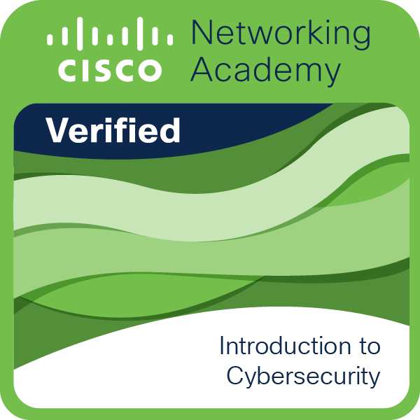

Monitoring and triage
Alert review, severity thinking, false-positive checks, escalation notes, and basic case documentation.
Baku born. Studying in Dubai. Building toward SOC and incident response.
I am Omar Aliyev, a Computer Science / Cyber Security student at the University of Wollongong in Dubai, expected to graduate in early 2028. I am targeting full-time remote junior SOC Analyst roles where I can combine hands-on lab practice, web project experience, and client-facing communication from real estate sales.
Profile
My current focus is security monitoring, log analysis, phishing investigation, endpoint activity review, and disciplined incident documentation. I am building practical experience through university work, TryHackMe labs, Cisco Networking Academy learning, and independent web projects.
Before moving deeper into cybersecurity, I worked in real estate sales with PointBlankProperties. That background helps me communicate clearly, ask direct questions under pressure, and document what matters for people who need fast decisions.
SOC Readiness
Alert review, severity thinking, false-positive checks, escalation notes, and basic case documentation.
Windows Event Logs, Sysmon concepts, process activity, authentication events, and suspicious command review.
TCP/IP, DNS, HTTP/S, common ports, Wireshark packet review, and Nmap-style service enumeration.
MITRE ATT&CK basics, phishing behavior, brute-force patterns, malware indicators, and IOC enrichment.
Linux fundamentals, Python basics, JavaScript, Node.js, SQL/SQLite, GitHub, and web deployment workflows.
Client-facing sales experience, concise reporting, stakeholder updates, and structured investigation summaries.
Projects
Active web platform project with backend, data, authentication, and deployment work. Security relevance: production-style responsibility, access control thinking, data handling, and practical debugging under real constraints.
Website delivered for a client and sold. Demonstrates client communication, requirements handling, deployment awareness, and the ability to ship public-facing work.
Website delivered for a client with a security patch included. Demonstrates practical remediation mindset: identify the issue, apply a fix, and protect the delivered product.
Credentials
I am currently expanding my SOC foundation through TryHackMe labs and verified cybersecurity learning. Public badge and lab profiles are linked below so recruiters can verify them directly.

Introduction to Cybersecurity
Resume
My resume summarizes my SOC direction, cybersecurity education, project work, certifications, and technical practice.
Contact